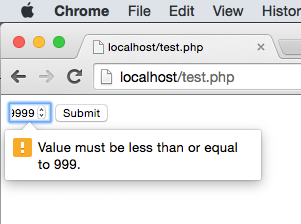
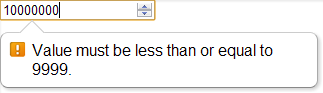

How can I set max-length in an HTML5 "input type=number" element?
For <input type="number"> element, maxlength is not working. How can I
restrict the maxlength for that number element?
Answer
And you can add a max attribute that will specify the highest possible
number that you may insert
<input type="number" max="999" />
if you add both a max and a min value you can specify the range of allowed
values:
<input type="number" min="1" max="999" />
The above will still not stop a user from manually entering a value outside of the specified range. Instead he will be displayed a popup telling him to enter a value within this range upon submitting the form as shown in this screenshot:

Suggest
You can specify the min and max attributes, which will allow input only
within a specific range.
<!-- equivalent to maxlength=4 --> <input type="number" min="-9999" max="9999">
This only works for the spinner control buttons, however. Although the user
may be able to type a number greater than the allowed max, the form will not
submit.

Screenshot taken from Chrome 15
You can use the HTML5 oninput event in JavaScript to limit the number of
characters:
myInput.oninput = function () { if (this.value.length > 4) { this.value = this.value.slice(0,4); } }